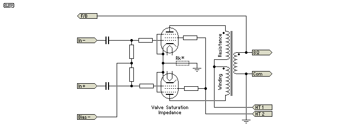
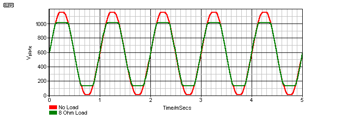

|
| Elliott Sound Products | Valves vs. Transistors (Part II) |
Valves vs. Transistors (Part II) - What are the differences?
Copyright © 2004 - Rod Elliott (ESP)
Page Created 15 Aug 2012
 Valves Index
Main Index
Valves Index
Main Index
Valves (vacuum tubes) vs. transistors (yes, again  ) ... this somewhat simplified article looks at the primary differences between the two. I have included some measured data from a valve amp that may help understanding the differences in real terms. Apart from the obvious differences set out below, there are some important considerations that for reasons I do not understand, seem to have been completely ignored for the most part. These will be covered in detail (together with the measurements) later in this article.
) ... this somewhat simplified article looks at the primary differences between the two. I have included some measured data from a valve amp that may help understanding the differences in real terms. Apart from the obvious differences set out below, there are some important considerations that for reasons I do not understand, seem to have been completely ignored for the most part. These will be covered in detail (together with the measurements) later in this article.
There are differences - not only between valved and transistorised amplifiers, but between different valve (or transistor) amps amongst their peers. However, the fact remains that when similarly specified amplifiers are compared using a double blind test (DBT) methodology, it is rare that listeners are able to pick the difference with statistically significant reliability.
While this could be because of 'test stress' as commonly complained of by many subjectivists (and assuming you actually believe it happens), it is generally more likely that the differences are inaudible. I do not propose to discuss the audibility or otherwise of various distortion mechanisms here. I will just describe, in simple and measurable terms, the primary differences between vacuum tube amps and 'solid state' versions of similar specifications.
Well apart from the physical differences between valves and semiconductors, there are several differentiating features of each that must be understood. While some of these are of prime importance, others are merely a curiosity ... they are certainly different, but there is nothing to suggest that these differences can be translated into audibility. This is not to say that some people won't try to do exactly that, but their results should be subjected to intense scrutiny to determine whether the 'facts' are real or imagined.
The following list (and most of this discussion) is based on using valves in power amplifiers, rather than line level (preamplifier) stages. The analysis that follows compares like with like (insofar as possible), and assumes push-pull, Class-AB amplifiers, driving resistive and loudspeaker loads. While other topologies may give (marginally) different results in some cases, the general (and overwhelming) factors remain much the same.
Firstly, we shall look at the physical characteristics of the amplifying devices themselves ...
| Parameter | Vacuum Tube | Semiconductor |
| Insulation materials | Vacuum / Mica | Semiconductor junctions/ oxides |
| Insulation linearity | Excellent | Fair to good |
| Operating voltage | High | Low * |
| Operating current | Low | High |
| Device gain | Low | High |
| Device linearity | Fair to very good | Fair to very good |
| Output transformer needed | Yes | No |
| Heat Dissipation (quiescent) | High | Low |
| Manufacturing Cost | High | Low |
| Running costs | Relatively high | Low |
* While there are many transistors that can operate at voltages that will stress most valves, these are uncommon in audio amplifiers
While the above is not an exhaustive list, it gives a reasonable overview of the primary differences between the devices. By necessity, the list is not as detailed as it might be, and in some cases I have made assumptions that are reasonable for audio amplifiers. For example, many valves have extremely high amplification factors, but generally have poor linearity as a result. While some high gain valves are used in audio, they are not common in modern equipment. Likewise device linearity. Both valves and semiconductors range from being highly non-linear to having very good linearity (before feedback is applied).
One of the most commonly known aspects of valve amplifier behaviour is the 'soft' clipping characterised by virtually all vacuum tube amps. Where a transistor amp clips with sharp edges and an almost perfectly symmetrical waveform, a valve amplifier typically does not. In addition, a valve amp at very low volume has vanishing low distortion levels, and the distortion increases steadily with amplitude. When the onset of clipping is reached, the valve amp will already be showing perhaps 1% distortion or more, where a transistor amp will typically register its typically low (< 0.1%) distortion, which increases very rapidly as the signal clips.
This is one reason that a valve amp may seem to sound louder than an equivalently specified transistor amp, because clipping is not as harsh, and more clipping can be tolerated before the sound becomes objectionable. However, this is a very minor point, and although it is valid, it is the least of the reported differences in sound quality. We also need to consider the very best of the hi-fi valve amps that appeared just before they all started to vanish (Quad, McIntosh, Audio Research, etc.). Many of these amps used complex output transformers to minimise phase shift, and as a result used a comparatively high amount of negative feedback. As a result, these amps had very low distortion, and clipping behaviour that was almost indistinguishable from a transistor amp!
Of far greater importance (and ignored by a great many listeners and reviewers) is output impedance. Where a typical transistor amplifier will have an output impedance of < 0.1 Ohm (100 milli-Ohms), a valve amplifier may have an output impedance approaching (or exceeding) the load impedance. Six Ohms is not at all uncommon for a push-pull amplifier with no feedback (assuming a transformer tapping for nominal 8 ohm loads), and even a valve amp with an ultra-linear output transformer and having the maximum feedback obtainable without incurring stability problems will have an output impedance that is rarely below 1 Ohm.
By modern standards, this is very high, and it will change the sound of nearly all loudspeakers. The accuracy of the speaker will almost certainly be reduced, but the subjective sound is usually 'better' - at least in the short term. Longer term listening may reveal that the bass is under damped and perhaps a little 'boomy', while treble response may be accentuated. It is rare that the accentuation will be highly objectionable, but it certainly will not be natural. Crossover performance is also compromised, but the degree depends on a great many factors that are impossible to predict without detailed testing of the specific loudspeaker system. Naturally, a speaker that was designed using valve amplifiers will sound completely wrong with a transistor amp, but such loudspeakers are in the minority.
One of the main differences (and the least reported of all) is a direct result of the relative 'efficiency' of the output devices. Bipolar transistors conduct very hard when turned on fully, and there may be as little as 1 Volt lost across the output device. MOSFETs are a little different, losing perhaps 3 to 7 Volts when turned on and supplying appreciable current. Valves can 'lose' as much as 33% of their supply voltage when turned on and supplying the nominal load impedance.
This is a major difference between the two different amp types, and even a fully conducting (turned on hard) valve may have many volts between cathode and anode. The effects when driving a (resistive) dummy load are effectively invisible - the two different amp types will appear to be rather similar. The real difference is immediately apparent when a real-world loudspeaker is the load, and the full impact of the relatively low maximum conduction efficiency of the valve is understood. The magnitude of this difference depends on the output stage topology, with triodes having the greatest differential, and pentodes the smallest.
What does this mean during listening tests? It means that the amplifier will be able to provide a higher voltage swing into higher than normal load impedances - this is something that a solid state amplifier cannot do, as its voltage swing is determined almost entirely by the supply voltage.
The saturation voltage of a vacuum tube (i.e. the valve is turned on as hard as possible) is determined by the grid voltage and anode current. The valve will also be subject to current saturation (based on the type of cathode and its temperature), and while pure theory indicates that this region should be avoided to prevent cathode damage, in reality it cannot be avoided and always has some influence. While it is always possible to decrease saturation voltage by making the grid positive with respect to the cathode, this will cause grid current to flow. This mode of operation is often referred to as Class-AB1 and although it provides more power, this is at the expense of distortion and in some cases, transient recovery (also known as 'blocking').
The valve amplifier used for these tests was borrowed, and is reasonably representative of a hi-fi power amp (that's what its owner uses it for, and that was the design intent). While I do have another at my disposal, it is not suitable for hi-fi use. The amp used is a 100W Class-AB design, using ultra-linear (50% taps) operation and having no global feedback. Not surprisingly, distortion is somewhat higher than one would expect from a circuit using feedback, but the subjective sound quality is still very good. While triode operation would reduce distortion, it is extremely difficult to achieve this power level with triodes, unless the number of output valves is increased - this comes at a very high cost when valves are used (in this case, KT88s).
With a rather massive 20 Ohms output impedance, the amplifier will sound very different from any solid state 'equivalent'. The output impedance is made up from a number of internal impedances - the plate 'resistance' of the valve itself, primary and secondary winding resistance in the output transformer, as well as any other resistances that may be in series with the valve itself (cathode resistors, plate 'stopper' resistances, etc.)
Analysing the peak output swing at the speaker terminals, we find that at the onset of clipping, there is 25V RMS across an 8 ohm load - a power of 78W. With no load at all, the output voltage swing can be increased to 40V RMS before clipping - a very significant difference. Only a part of that can be attributed to the power supply, which, like all unregulated power supplies, collapses under load. We can examine this closely to see what has happened ...
With no load (or very light loading), the peak output voltage swing is almost exactly 10% of the supply (which is not loaded down, so remains at 584 Volts). When the load is increased (using an 8 Ohm load), the supply collapses by about 3.5%, but the output voltage swing is reduced to 6.3% of the available supply voltage. If the output valves were able to provide the same output swing with full load and no load, the peak loaded output voltage would be 54 Volts (38V RMS or 186W). The following table shows the operating conditions under all of the above possibilities.
| Output Loaded | Output Unloaded | |
| Supply Voltage (DC) | 564 VDC | 584 VDC |
| Output Voltage ¹ (Peak) | 35.4 V | 54.6 V |
| Output Voltage (RMS) | 25 V | 38.6 V |
Internal Voltage Drop ² (Peak) | 19.2 V | 0 V |
| Output Power ³ | 78 W | 186 W |
Notes:
1 Output voltage is normalised to that which would be developed with a loaded supply voltage of 564V. The reasons for this will (hopefully) become clear later.
2 The internal voltage drop is referred to the output - internal voltage drop is a lot higher (approximately 10 times the externally measured value in this case)
3 The figure quoted for unloaded output power is what the amplifier would be capable of if it did not have a high internal impedance. The supply voltage is assumed to be the same as for the loaded case (i.e. 564V), and zero losses are included.
The above data are interesting. From this, it is possible to calculate the internal resistance (power limiting impedance) of the amplifier, since we know the unloaded and loaded voltages (this is quite different from output impedance, although internal impedance does form a part of the final output impedance because there is no feedback). In the following drawing, I included a cathode resistor (Rk). This is not always used, but if present it's another limiting impedance. It doesn't matter a great deal if it's bypassed or not, because any voltage across the resistor(s) will always be unavailable to the maximum peak voltage swing.

Figure 2.4.1 - Valve Output Stage Limiting Impedances
A simple resistance calculation is all that is really necessary here, since the impedance curve is flat enough over the frequency range of interest that reactance does not need to be considered. We know that Ohm's law will give us the resistance, so we may do the following calculations ...
I = V / R (Current = Volts / Resistance)
I = 35.4 / 8 (Peak voltage divided by load impedance)
This gives us the current in the load, so we can calculate the internal resistance of the amplifier. Yes, I know that this can be done in one formula, but it will be a lot harder for you to remember it, so I shall do it the long (but simple) way.
Now that we know the peak current (4.4 Amps), we can work out the internal resistance. We know that we 'lose' 19.2V (peak) inside the amp, so again using Ohm's law ...
R = 19.2 / 4.4 = 4.36 Ohms (at transformer secondary)
This is the amplifier's internal impedance, and is the cause of the losses measured when the amp was driven with full load and no load. Note that the effective supply voltage was taken as 564V (the loaded supply voltage), so supply loading is factored out of the equation. While I am sure that anyone who tried hard enough will find fault with the methods I used, this is not an exact science. The variation in real load impedances will cause variations that exceed the errors made here by a wide margin.
Note that the internal impedance calculated is not the same as output impedance. Output impedance is determined by overall feedback, and can be lower or higher than the internal impedance. The internal impedance is a current-limiting effect within the output valves themselves, aided by the resistance of the transformer primary winding. ANy valve can be forced to have a relatively low saturation voltage if it is allowed to draw control grid current (Class-AB¹), but this class of operation is restricted to applications where higher than normal distortion is allowable.
The purpose of this article is to demonstrate a trend - an ability that most valve amplifiers have that is not duplicated by solid state amplifiers. This 'ability' is to provide a greater voltage swing into a normal loudspeaker load than the amplifier power rating would indicate, thereby making the valve amp seem louder or more 'effortless' than its solid state rivals.
 | It is important to understand that the above is not a function of the short-term capability of the power supply. This was exploited with amplifier ratings some time ago, and the term 'dynamic headroom' was used to provide a short term power rating. As a figure of merit, dynamic headroom has none - a poorly designed or inadequate supply would give 'better' dynamic headroom figures than a regulated or very robust supply. Fortunately, the term seems to have fallen by the wayside. |
The internal impedance essentially consists of a combination of things. The combined winding resistance (primary and secondary) of the output transformer, the internal impedance (determined by valve saturation voltage) of the output valves, plus any additional resistance that may be added to the circuit (cathode resistors for example). While the supply impedance also contributes part of the impedance, this is a function of the power supply - not the amplifier itself. I want to keep these separate, as they are separate issues and are unrelated.
I stated earlier that the internal impedance is not directly related to output impedance. This remains true, but when no feedback is used the two would appear to add together. Thus, one would expect the actual output impedance to be significantly higher than theory might indicate. As described above, the output impedance is 20 Ohms, and the internal (limiting) impedance is 4.36 Ohms. While feedback could be used to reduce the output impedance dramatically, it will have no effect whatsoever on the internal impedance of the amplifier.
I have referred to this internal impedance as a 'limiting impedance' deliberately - it only applies at the limits of valve conduction, when the valve is turned on as hard as possible. The valve is able to turn on harder when the current through it is lower. This is in contrast to a BJT (Bipolar Junction Transistor), which is capable of less than 1V saturation voltage, regardless of current (within reason, of course). The closest to a valve in this respect is the lateral MOSFET - it too has a saturation voltage that depends on the gate-source voltage (equivalent to the grid-cathode voltage in a valve), and will reach a limit that reduces the output power in exactly the same way that the valve amplifier does. The reduction is much less pronounced, and the MOSFET amp will normally have other characteristics that do not make it an equivalent to a valve amplifier in any real sense.
To make this whole article a little clearer for those who cannot quite grasp the technical details above, we can summarise the effects and provide most of the answers as to the difference between valve and transistor amps. These include the following ...
As always, there is more to this than the rather simplified points above, but they constitute the main differences. These effects are all measurable, but one has to know what to look for. Of all the points made above, a transistor amplifier can be designed to reproduce all but one of the effects - soft clipping. Many have claimed to achieve this, but it is actually a technical nightmare to do it properly - especially coupled with the other factors. Indeed, it is not easy to deliberately increase the distortion of an amplifier either, but who would want to do so? Low distortion is a good thing, and increasing it deliberately is (IMO) non-sensible.
Figure 1 shows the clipping performance of the tested amplifier, measured directly at the output valve anode. As you can see, the no-load case allows the valve to conduct fully, reducing the voltage across the valve when fully on to close to zero volts (it was actually measured at 1.6V).

Figure 2.5.1 - Valve Clipping at No Load and Full Load
Not shown is the measured performance with a 16 Ohm load - the clipping (saturation) voltage at 16Ω was 70V, versus 132V with an 8Ω Ohm load. This shows quite clearly that a valve is not normally capable of turning on as hard as one might have expected, and the saturation voltage is dependent on the current. This is actually a well known effect, but its significance has (IMO) been overlooked for too long.
The saturation voltage is reasonably linear with current, and from the above we can even make a rough guess of the intrinsic resistance of the valve itself. We know that the supply voltage is 564V when loaded, and there is 132V dropped across the valve. Therefore, the peak voltage swing on the transformer primary is ...
564 - 132 = 432V
Since we also know the output voltage (35.4V peak) and impedance (8 ohms), we can calculate the transformer ratio and then valve current ...
Transformer Ratio = Vin / Vout = 432 / 35.4 = 12.2:1
We already determined that peak output current is 4.4A, so the next step is easy ...
Peak Valve Current = Output Current / Transformer Ratio = 4.4 / 12.2 = 0.36A (360mA)
Valve Plate (Limiting) Resistance = Vsaturation / Peak Valve Current = 132 / 0.36 = 366 Ohms
Finally, we can determine the effective valve limiting resistance at the transformer secondary ...
Transformer Impedance Ratio = (Transformer Ratio)² = 12.2² = 149:1
Output Limiting Resistance = Valve Limiting Resistance / Transformer Impedance Ratio = 366 / 149 = 2.45 Ohms
Note that we determined earlier that the total output limiting resistance was 4.36Ω, so there is a discrepancy. The difference will be made up of a great many different impedances, and the effect of the ultra-linear output stage is difficult to predict ...
Measurement shows that the actual primary winding resistance is 58Ω per side (116Ω plate-plate). The secondary resistance is difficult to measure accurately, but is in the order of 0.4Ω. I suspect that there is also some additional effect resulting from the ultra-linear topology, since the screen grid of the output valve shares 50% of the winding - this has not been investigated at the time of writing. In the end, minor errors are of little consequence - any real-world load will be vastly different from that used for testing, and all we can say with certainty is that the effects shown are real.
So, do valve amps sound different from transistor amps? Of course they do. The details above show the major points of difference, and these are all audible to a greater or lesser degree, depending on the loudspeaker load characteristics and the amplifier design. While it is possible to design a transistor amp that has high output impedance and a relatively high internal limiting impedance (the author having done so over 25 years ago), the solid state and valve amp are immediately identifiable once there is enough clipping so that the harmonic structure can be heard. The differences below clipping are also audible, with the transistor amp having less distortion and sounding generally cleaner.
The fact of the matter is that there is no point trying to make a transistor amp sound like a valve amp, since those who like valve amplifiers will still want to see the glass bottles with their little lights inside, and will never be convinced that the alternative is superior.
Managing the additional dynamic power that a valve amp can produce into higher than normal loads is easily achieved by using a transistor amp with more power - this is so cheap these days that dealing with the additional heat created by adding circuitry to make the output stage less efficient is a pointless exercise at best.
As noted elsewhere in the valve section, I happen to like valve amps - there is something very pleasing about the concept, and they give a great deal of freedom to express one's creativity in the final design as seen by the public. Unfortunately, there are a great many negatives as well - high voltages, fragile glass envelopes with fragile metal intestines, and ... the output transformer. Good ones are very expensive, cheap ones are generally rubbish. The cost of building a 100W valve amp is many times higher than building an equivalent using transistors, and there is ongoing maintenance with valve replacements, occasional tweaking of the bias to get it back where it should be as the valves age, etc.
Then there is the search for decent valves that can perform as well as those made during the valve era. This is unacceptably difficult, and I've seen premium Russian valves that have a nice easy life fail for no reason whatsoever. Valves from elsewhere are usually worse, and every time you buy a valve you are taking a risk. The quality is extremely variable, and few can tolerate the voltages that used to be common. In my experience, buying valves today is much like deliberately buying counterfeit semiconductors - you have no idea what you've purchased until it fails. 
Ever wondered why The Audio Pages doesn't have any valve projects? Well, now you know.
Valves Index
Main Index